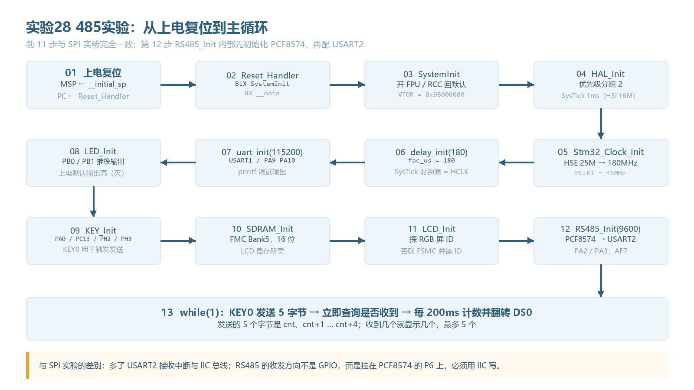
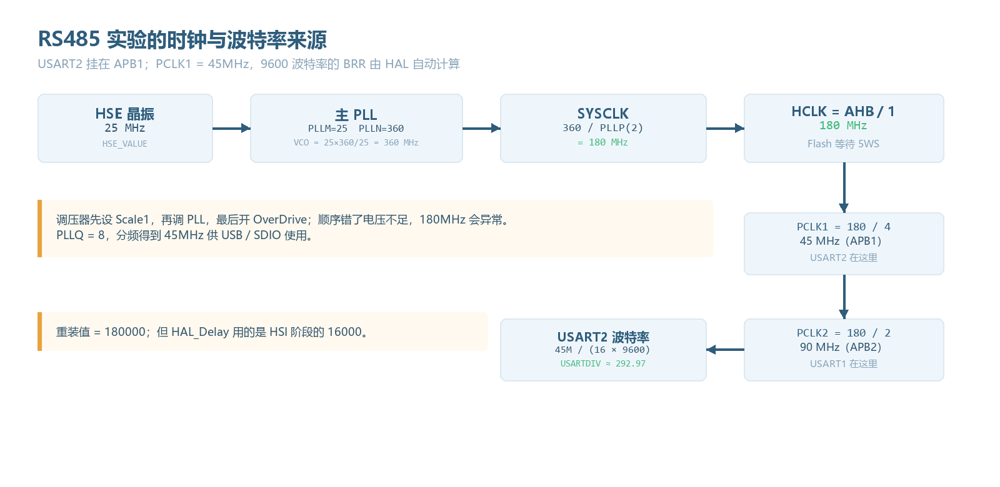
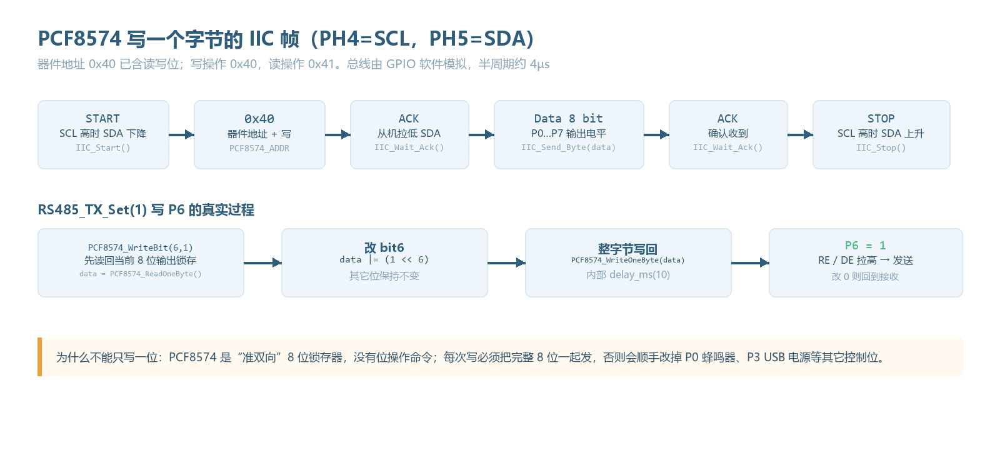
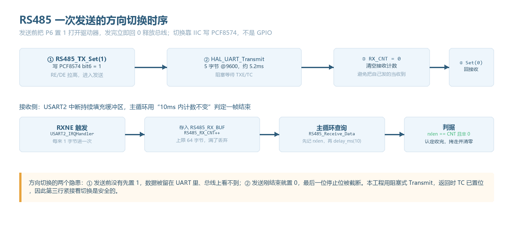
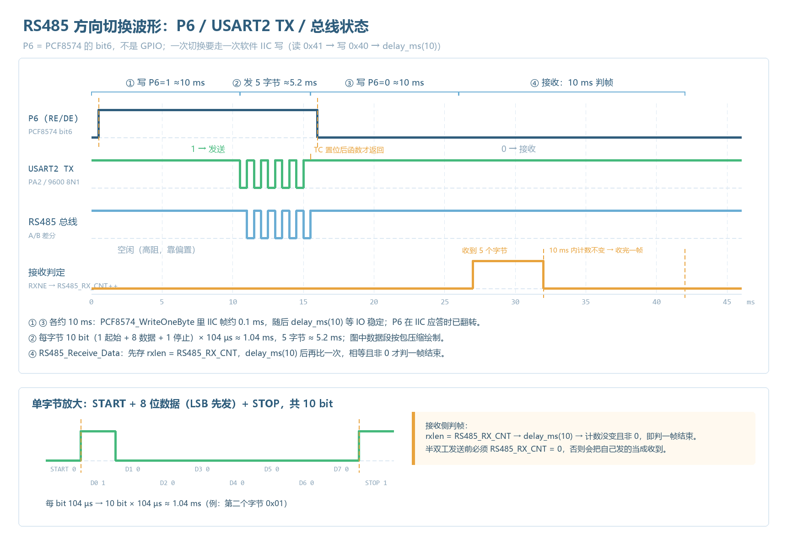
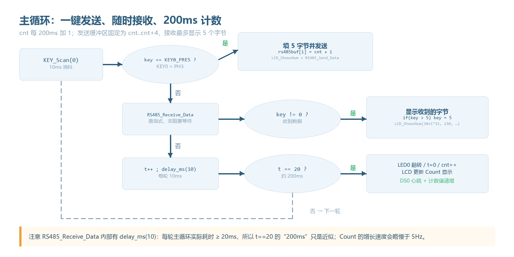

01 实验目标与硬件资源
RS485 与普通串口最大的差别是半双工：同一对差分线上，同一时刻只能有一个方向在驱动。开发板把收发器的 RE/DE 并在一起，接到 PCF8574 的 P6，因此“切方向”本质上是一次 IIC 写操作，而不是拉一个 GPIO。本实验按下 KEY0 发送 5 个递增字节，随后立即查询是否收到数据；只要总线上有另一个节点（或调试助手）回发，就能在 LCD 上看到收到的字节。
| 资源 | 引脚 / 器件 | 关键配置 | 源码证据 |
|---|---|---|---|
| USART2 | PA2=TX、PA3=RX | AF7、复用推挽、上拉、高速 | HARDWARE/RS485/rs485.c · RS485_Init |
| 串口参数 | 9600-8-N-1 | 无硬件流控，收发模式 | USART2_RS485Handler.Init |
| 方向控制 | PCF8574 的 P6 | RS485_RE_IO = 6，1=发送，0=接收 | HARDWARE/PCF8574/pcf8574.h |
| IIC 总线 | PH4=SCL、PH5=SDA | GPIO 推挽模拟，上拉，半周期约 4µs | HARDWARE/IIC/myiic.c · IIC_Init |
| PCF8574 地址 | 0x40（已左移） | 写 0x40，读 0x41 | PCF8574_ADDR |
| 接收中断 | USART2_IRQn | 抢占 3、子优先级 3，EN_USART2_RX=1 | RS485_Init 末尾 |
| 按键 | KEY0=PH3 | 按下触发一次发送 | USER/main.c |
| 显示 / 调试 | LCD、USART1 115200 | Count、Send Data、Receive Data 三行 | main.c / usart.c |
RS485_Send_Data 里成对调用 RS485_TX_Set 完成。02 目录与文件分工
| 目录 / 文件 | 负责什么 | 本页看什么 |
|---|---|---|
CORE/startup_stm32f429xx.s | 栈堆、向量表、复位入口 | USART2_IRQHandler 的向量位置 |
USER/system_stm32f4xx.c | FPU、RCC 复位、VTOR | SystemInit |
USER/main.c | 初始化、发送缓冲、接收显示 | main 的 cnt 与 rs485buf |
USER/stm32f4xx_it.c | 异常入口 | 仍只有 SysTick_Handler |
HARDWARE/RS485/rs485.c | USART2、方向切换、中断接收、查询接收 | RS485_Init、USART2_IRQHandler |
HARDWARE/PCF8574/pcf8574.c | 8 位 IO 扩展、位操作 | PCF8574_WriteBit |
HARDWARE/IIC/myiic.c | GPIO 模拟 IIC 时序 | IIC_Init、IIC_Start、IIC_Wait_Ack |
SYSTEM/sys/sys.c | 180MHz 时钟树 | PCLK1 = 45MHz |
SYSTEM/delay/delay.c | IIC 的 µs 级延时、接收判帧的 ms 延时 | delay_us(4)、delay_ms(10) |
SYSTEM/usart/usart.c | USART1 调试口 | uart_init(115200) |
HARDWARE/LCD、SDRAM、KEY、LED | 显示与交互 | 只确认调用顺序 |
USART2_IRQHandler 并没有写在 stm32f4xx_it.c 里，而是定义在 rs485.c。启动文件的向量表里这个位置是弱定义，链接器会用 rs485.c 的同名强符号覆盖它——这也是为什么“在 it.c 里找不到串口 2 的中断函数”并不代表没有中断。03 启动流程总览

int main(void)
{
u8 key;
u8 i=0,t=0;
u8 cnt=0;
u8 rs485buf[5]; // 发送/接收共用的 5 字节缓冲
HAL_Init(); //初始化HAL库
Stm32_Clock_Init(360,25,2,8); //设置时钟,180Mhz
delay_init(180); //初始化延时函数
uart_init(115200); //初始化USART1（调试口）
LED_Init(); //初始化LED
KEY_Init(); //初始化按键
SDRAM_Init(); //初始化SDRAM
LCD_Init(); //初始化LCD
RS485_Init(9600); //初始化RS485（内部先 PCF8574，再 USART2）
POINT_COLOR=RED;
LCD_ShowString(30,50,200,16,16,"Apollo STM32F4/F7");
LCD_ShowString(30,70,200,16,16,"RS485 TEST");
LCD_ShowString(30,90,200,16,16,"ATOM@ALIENTEK");
LCD_ShowString(30,110,200,16,16,"2016/1/16");
LCD_ShowString(30,130,200,16,16,"KEY0:Send"); //显示提示信息
POINT_COLOR=BLUE;
LCD_ShowString(30,150,200,16,16,"Count:");
LCD_ShowString(30,170,200,16,16,"Send Data:");
LCD_ShowString(30,210,200,16,16,"Receive Data:");
while(1)
{
key=KEY_Scan(0);
if(key==KEY0_PRES) //KEY0按下,发送一次数据
{
for(i=0;i<5;i++)
{
rs485buf[i]=cnt+i; //填充发送缓冲区
LCD_ShowxNum(30+i*32,190,rs485buf[i],3,16,0X80);
}
RS485_Send_Data(rs485buf,5); //发送5个字节
}
RS485_Receive_Data(rs485buf,&key);
if(key) //接收到有数据
{
if(key>5)key=5; //最大显示 5 个
for(i=0;i<key;i++)LCD_ShowxNum(30+i*32,230,rs485buf[i],3,16,0X80);
}
t++;
delay_ms(10);
if(t==20)
{
LED0=!LED0; //提示系统正在运行
t=0;
cnt++;
LCD_ShowxNum(30+48,150,cnt,3,16,0X80);
}
}
}
RS485_Init内部第一步是PCF8574_Init，它调用IIC_Init并做一次 IIC 探测；IIC 的delay_us依赖delay_init已经设好的fac_us，所以必须排在delay_init之后。- USART2 的波特率由
HAL_UART_Init根据PCLK1计算，必须等Stm32_Clock_Init把 APB1 切到 45MHz 之后再初始化，否则 BRR 按 HSI 算，9600 会变成别的值。 - 把它放在 LCD 之后只是习惯：LCD 初始化最慢，若 485 有问题可以先把屏幕跑起来，便于显示错误。
- 主循环里发送与接收复用同一个
rs485buf：发送函数返回后RS485_RX_CNT=0，接收函数再把新数据覆盖进来，不存在同时读写。
04 启动文件与向量表
启动文件为每个异常/中断预留了一个 4 字节的表项，初值都是 [WEAK] 的默认处理函数。USART2_IRQHandler 在向量表中的位置由芯片型号决定（STM32F429 的 USART2 中断号是 38），用户只需在任意 C 文件里定义同名函数，链接阶段就会覆盖弱符号。
Stack_Size EQU 0x400; ; 栈 1KB Heap_Size EQU 0x200; ; 堆 512B AREA RESET, DATA, READONLY EXPORT __Vectors __Vectors DCD __initial_sp ; 栈顶 DCD Reset_Handler ; 复位入口 ; ……外部中断向量省略 DCD USART2_IRQHandler ; 串口2 中断入口（弱定义） Reset_Handler PROC LDR R0, =SystemInit BLX R0 LDR R0, =__main BX R0 ENDP EXPORT USART2_IRQHandler [WEAK] USART2_IRQHandler B . ; 默认死循环，等待用户覆盖
- 启动文件里的名字必须与 CMSIS 头文件里
USART2_IRQn对应的向量名完全一致，大小写敏感。 - 用户函数不要加
static，否则链接器看不到，弱定义仍然生效，中断一来就停在B .。 - 本工程把函数放在
rs485.c而不是stm32f4xx_it.c，属于“按驱动归位”的写法；只要名字对，位置不影响。 - 栈只有 1KB：中断里不要放大的局部数组，本工程只用了 1 字节
res。
05 SystemInit 与 HAL_Init
void SystemInit(void)
{
SCB->CPACR |= ((3UL << 10*2)|(3UL << 11*2)); // 使能 FPU
RCC->CR |= (uint32_t)0x00000001; // 打开 HSI
RCC->CFGR = 0x00000000; // 时钟树回默认
RCC->CR &= (uint32_t)0xFEF6FFFF; // 关 HSEON/PLLON
RCC->PLLCFGR = 0x24003010;
SCB->VTOR = FLASH_BASE | VECT_TAB_OFFSET; // 向量表基址
}
HAL_StatusTypeDef HAL_Init(void)
{
__HAL_FLASH_INSTRUCTION_CACHE_ENABLE();
__HAL_FLASH_DATA_CACHE_ENABLE();
__HAL_FLASH_PREFETCH_BUFFER_ENABLE();
HAL_NVIC_SetPriorityGrouping(NVIC_PRIORITYGROUP_2); // 分组2：2 位抢占 + 2 位子优先级
HAL_InitTick(TICK_INT_PRIORITY); // 0x0F
HAL_MspInit();
return HAL_OK;
}
NVIC_PRIORITYGROUP_2表示 4 位优先级里高 2 位是抢占优先级、低 2 位是子优先级。- 所以
HAL_NVIC_SetPriority(USART2_IRQn,3,3)合法：抢占 3（最低一档）、子优先级 3（同抢占级里最低）。 - 若改成分组 4（全抢占），子优先级参数会失效，
3,3被解释成抢占 3、子 0，行为与预期不同。 - SysTick 的优先级是 0x0F，同样落在最低档，不会抢占串口中断。
06 时钟、延时与串口

RCC_OscInitStructure.PLL.PLLM=25; // 25MHz / 25 = 1MHz RCC_OscInitStructure.PLL.PLLN=360; // ×360 = 360MHz VCO RCC_OscInitStructure.PLL.PLLP=2; // /2 = 180MHz SYSCLK RCC_OscInitStructure.PLL.PLLQ=8; // /8 = 45MHz ... RCC_ClkInitStructure.APB1CLKDivider=RCC_HCLK_DIV4; // PCLK1 = 45MHz RCC_ClkInitStructure.APB2CLKDivider=RCC_HCLK_DIV2; // PCLK2 = 90MHz ret=HAL_RCC_ClockConfig(&RCC_ClkInitStructure,FLASH_LATENCY_5);
| 项目 | 取值 / 公式 | 说明 |
|---|---|---|
| USART2 时钟源 | PCLK1 = 45MHz | USART2 挂在 APB1 |
| USARTDIV | 45,000,000 ÷ (16 × 9600) ≈ 292.97 | HAL 自动算 BRR |
| 每字节耗时 | 10 位 ÷ 9600 ≈ 1.04ms | 1 起始 + 8 数据 + 1 停止 |
| 5 字节发送 | 约 5.2ms | HAL_UART_Transmit 阻塞 |
| IIC 半周期 | delay_us(4) | SCL 约 125kHz |
| 接收判帧 | delay_ms(10) | 10ms 内计数不变即认为收完 |
uart_init(115200)配的是 USART1 调试口，与 485 无关；RS485_Init(9600)才是总线波特率。- USART2 的 BRR 由 HAL 依据
HAL_RCC_GetPCLK1Freq()计算；若时钟树改了 APB1 分频而忘记改回来，9600 会实际变成别的速率。 delay_init(180)的 180 与 HCLK 对应，IIC 的 4µs 与判帧的 10ms 都建立在它正确的前提上。- RS485 总线两端需要 120Ω 终端电阻；波特率越高、线越长，对终端匹配越敏感。本实验 9600 属于低速，容错较高。
07 USART2 的引脚与 9600 配置
void RS485_Init(u32 bound)
{
GPIO_InitTypeDef GPIO_Initure;
PCF8574_Init(); //初始化PCF8574，用于控制RE脚
__HAL_RCC_GPIOA_CLK_ENABLE(); //使能GPIOA时钟
__HAL_RCC_USART2_CLK_ENABLE(); //使能USART2时钟
GPIO_Initure.Pin=GPIO_PIN_2|GPIO_PIN_3; //PA2,3
GPIO_Initure.Mode=GPIO_MODE_AF_PP; //复用推挽输出
GPIO_Initure.Pull=GPIO_PULLUP; //上拉
GPIO_Initure.Speed=GPIO_SPEED_HIGH; //高速
GPIO_Initure.Alternate=GPIO_AF7_USART2; //复用为USART2
HAL_GPIO_Init(GPIOA,&GPIO_Initure); //初始化PA2,3
USART2_RS485Handler.Instance=USART2;
USART2_RS485Handler.Init.BaudRate=bound; //9600
USART2_RS485Handler.Init.WordLength=UART_WORDLENGTH_8B;
USART2_RS485Handler.Init.StopBits=UART_STOPBITS_1;
USART2_RS485Handler.Init.Parity=UART_PARITY_NONE;
USART2_RS485Handler.Init.HwFlowCtl=UART_HWCONTROL_NONE;
USART2_RS485Handler.Init.Mode=UART_MODE_TX_RX;
HAL_UART_Init(&USART2_RS485Handler);
__HAL_UART_DISABLE_IT(&USART2_RS485Handler,UART_IT_TC); //关发送完成中断
#if EN_USART2_RX
__HAL_UART_ENABLE_IT(&USART2_RS485Handler,UART_IT_RXNE); //开启接收中断
HAL_NVIC_EnableIRQ(USART2_IRQn);
HAL_NVIC_SetPriority(USART2_IRQn,3,3); //抢占3，子优先级3
#endif
RS485_TX_Set(0); //默认接收模式
}
- PA2 是 USART2_TX，PA3 是 USART2_RX；AF7 是 F429 上 USART2 的固定复用编号，写错成 AF8 就没有波形。
- 上拉很重要：总线空闲时 RX 保持高电平（UART 空闲态），若浮空会不断触发噪声帧。
- 初始化末尾先
RS485_TX_Set(0)回到接收，保证上电后不会占着总线。 - 只开 RXNE、不开 TC：发送完成由阻塞式
HAL_UART_Transmit自己等，避免多一次中断。
08 PCF8574 与软件 IIC

PCF8574_WriteBit 的读—改—写void IIC_Init(void)
{
__HAL_RCC_GPIOH_CLK_ENABLE(); //使能GPIOH时钟
GPIO_Initure.Pin=GPIO_PIN_4|GPIO_PIN_5; //PH4=SCL, PH5=SDA
GPIO_Initure.Mode=GPIO_MODE_OUTPUT_PP; //推挽输出
GPIO_Initure.Pull=GPIO_PULLUP;
GPIO_Initure.Speed=GPIO_SPEED_FAST;
HAL_GPIO_Init(GPIOH,&GPIO_Initure);
IIC_SDA=1;
IIC_SCL=1;
}
void PCF8574_WriteOneByte(u8 DataToWrite)
{
IIC_Start();
IIC_Send_Byte(PCF8574_ADDR|0X00); //0x40，写
IIC_Wait_Ack();
IIC_Send_Byte(DataToWrite); //8 位输出锁存
IIC_Wait_Ack();
IIC_Stop();
delay_ms(10); //给 PCF8574 更新时间
}
void PCF8574_WriteBit(u8 bit,u8 sta)
{
u8 data;
data=PCF8574_ReadOneByte(); //先读出原来的设置
if(sta==0)data&=~(1<<bit);
else data|=1<<bit;
PCF8574_WriteOneByte(data); //写入新的数据
}
- PCF8574 没有“置位/复位某一位”的命令，只能整字节写；直接写
0x40会把其它 7 位一起改掉。 - 先
PCF8574_ReadOneByte()读回当前锁存值（读地址 0x41），再改 bit6，最后整字节写回，才能保持别的外设状态。 - IIC 是软件模拟：
IIC_Start里 SCL 高时 SDA 由高变低，IIC_Stop相反，中间用delay_us(4)保证建立/保持时间。 IIC_Wait_Ack最多等 250 次，超时就发 STOP 并返回 1；PCF8574_Init用它判断芯片是否在位。- 每次写后有
delay_ms(10)，这是为了让 PCF8574 的 IO 稳定，也解释了为什么切一次方向要花十几毫秒。
09 RS485 方向切换


P6 在 IIC 应答那一刻就翻转，但函数还要 delay_ms(10) 才返回，所以真正开始发送的时刻比调用点晚约 10 ms；5 个字节只占 5.2 ms，等 TC 置位后再写 P6=0，总线随即回到高阻的接收态。接收侧靠“10 ms 内 RS485_RX_CNT 不再增加”判定一帧收完。
void RS485_Send_Data(u8 *buf,u8 len)
{
RS485_TX_Set(1); //设置为发送模式
HAL_UART_Transmit(&USART2_RS485Handler,buf,len,1000); //阻塞发送，超时 1000ms
RS485_RX_CNT=0; //清接收计数，避免把自己发的当收到
RS485_TX_Set(0); //设置为接收模式
}
void RS485_TX_Set(u8 en)
{
PCF8574_WriteBit(RS485_RE_IO,en); //RS485_RE_IO = 6，写 P6
}
RS485_TX_Set(1)内部是一次“读 0x41 → 改 bit6 → 写 0x40”，耗时约 10ms；此时收发器的 DE=1、RE=1，驱动器打开。HAL_UART_Transmit是阻塞式：函数返回时最后一个停止位已经移出（TC 置位），所以紧接着拉低 P6 不会截断数据。RS485_RX_CNT=0必须在切回接收前清零：半双工收发器在发送时通常会把总线回读进 RX，如果不清，下一轮会把自己发的 5 个字节当成收到的。RS485_TX_Set(0)再花约 10ms 把 P6 拉低，收发器转为高阻接收；这段时间总线由其它节点或终端电阻维持空闲高。- 整个发送过程约 5.2ms 数据 + 20ms 方向切换，比数据本身还长，这是软件方向控制的固有开销。
10 中断链路：USART2
USART2_IRQHandler → 环形计数| 环节 | 本工程实际情况 | 源码证据 |
|---|---|---|
| 触发源 | USART2 收到 1 字节，RXNE 置位 | 硬件行为 |
| 控制器 | USART2 的 RXNEIE 已置位 | __HAL_UART_ENABLE_IT(...,UART_IT_RXNE) |
| NVIC | USART2_IRQn，抢占 3 / 子 3 | HAL_NVIC_SetPriority |
| ISR | USART2_IRQHandler（定义在 rs485.c） | HARDWARE/RS485/rs485.c |
| 用户处理 | 把字节存入 RS485_RX_BUF，计数 +1 | RS485_RX_BUF[64] |
| 主循环取数 | RS485_Receive_Data 拷贝并清零 | main.c |
u8 RS485_RX_BUF[64]; //接收缓冲,最大64个字节 u8 RS485_RX_CNT=0; //接收到的数据长度 void USART2_IRQHandler(void) { u8 res; if((__HAL_UART_GET_FLAG(&USART2_RS485Handler,UART_FLAG_RXNE)!=RESET)) { HAL_UART_Receive(&USART2_RS485Handler,&res,1,1000); //读走 1 字节，清 RXNE if(RS485_RX_CNT<64) { RS485_RX_BUF[RS485_RX_CNT]=res; //记录接收到的值 RS485_RX_CNT++; //接收数据增加1 } } }
HAL_UART_Receive以 1 字节、1000ms 超时读取，实际会立即返回，同时清掉 RXNE；这一步不能省，否则中断会反复进入。- ISR 里只做“存 + 计数”，不解析协议、不操作 LCD，保证中断短小；解析交给主循环的
RS485_Receive_Data。 RS485_RX_CNT<64是溢出保护：超过 64 字节直接丢弃，不会写穿数组。- 主循环读取时先缓存
rxlen，10ms 后再比较；这依赖中断在后台继续累加，因此这是一次典型的主循环与中断共享变量场景（本工程未加临界区，靠 8 位读写原子性）。
11 接收判定与 10ms 空闲
void RS485_Receive_Data(u8 *buf,u8 *len)
{
u8 rxlen=RS485_RX_CNT; //先记住当前长度
u8 i=0;
*len=0; //默认为0
delay_ms(10); //等待10ms，期间没有新字节就认为收完
if(rxlen==RS485_RX_CNT&&rxlen) //长度没变且有数据
{
for(i=0;i<rxlen;i++)
{
buf[i]=RS485_RX_BUF[i]; //拷贝到用户缓冲
}
*len=RS485_RX_CNT; //记录本次数据长度
RS485_RX_CNT=0; //清零，准备下一帧
}
}
- 判据是“10ms 前后长度相同”，意味着只要两帧之间间隔小于 10ms，就会被合并成一帧。
- 9600 波特率下每字节约 1.04ms，10ms 相当于约 10 个字节时间，对 5 字节的小包足够。
- 函数本身阻塞 10ms，因此主循环每轮至少 20ms（这里 10ms + 末尾
delay_ms(10)），t==20的 200ms 只是近似值。 - 如果主循环此时正好在
RS485_Send_Data里，接收中断仍会进，但因为发送前刚清零，回来后这些字节会被当成“收到的”——半双工回读是这类写法的常见坑。
12 主循环与现象

| 操作 | 可观察现象 | 对应代码 |
|---|---|---|
| 上电 | LCD 显示标题、KEY0:Send、Count/Send/Receive 三行 | main 中的 LCD_ShowString |
| 按 KEY0 | Send Data 行显示 5 个递增数字（cnt…cnt+4） | rs485buf[i]=cnt+i |
| 总线上有节点回发 | Receive Data 行显示收到的字节，最多 5 个 | RS485_Receive_Data |
| 空闲 | Count 每约 200ms 加 1，DS0 同步翻转 | t==20 分支 |
| 用 USB 转 485 对接 | 调试助手收到 5 字节，回发后 LCD 显示回发内容 | 需 A/B 线序一致、共地 |
- 发送分支只改 Send Data 那一行，接收分支只改 Receive Data 那一行，互不覆盖，便于同时观察。
cnt只在t==20时自增，因此连续按 KEY0 会看到同一组数字，直到过 200ms 才变化。- 接收显示前有
if(key>5)key=5，即使总线上来了一长串，也只显示前 5 个。 - DS0 翻转与 Count 更新在同一个分支，二者同步；如果 DS0 不闪而 Count 在变，说明你看到的是静态截图而不是运行状态。
13 关键逻辑复盘
| 环节 | 本工程取值 | 出错表现 |
|---|---|---|
| 时钟 | PCLK1 = 45MHz | 波特率偏移，调试助手收到乱码 |
| 引脚复用 | PA2/PA3 = AF7 | 完全没有波形 |
| IIC 总线 | PH4/PH5，上拉，4µs | PCF8574 探测失败，方向永远不切换 |
| 方向位 | P6：1 发 0 收 | 发送时总线无驱动，或接收时被自己占住 |
| 接收计数 | 发送前清 RS485_RX_CNT | 把自己发的 5 字节当收到 |
| 判帧 | 10ms 长度不变 | 长包被截断，或两包被合并 |
- 先看 LCD 是否能正常显示：不能，说明 LCD/SDRAM/时钟有问题，与 485 无关。
- 再看按 KEY0 时 Send Data 行是否变化：不变，说明按键或主循环卡住；变化但总线无波形，查 PA2 与方向位。
- 最后用 USB 转 485 对接：能收到但内容错，查波特率与 A/B 线序；收不到，查 P6 是否在发送期间为高。
14 总结与排查
从启动角度看，这个实验与 SPI 实验共享同一套启动文件、时钟树、延时与串口框架，新增的只有“USART2 + PCF8574 + 软件 IIC”这一条支路。理解它的关键不是记住某个寄存器，而是明确谁在什么时候把 P6 拉高、又什么时候拉低：RS485_Send_Data 负责成对切换，RS485_TX_Set 负责把逻辑电平写进 PCF8574，PCF8574_WriteBit 负责读—改—写，IIC_* 负责把字节送上总线。
| 现象 | 优先检查 | 依据 |
|---|---|---|
| LCD 正常但按键无反应 | KEY0 是否 PH3、KEY_Scan(0) 是否被长阻塞拖慢 | key.c / main.c |
| 发送时总线无差分信号 | P6 是否变高、收发器是否供电、A/B 是否接反 | RS485_TX_Set |
| 调试助手收到乱码 | 波特率 9600、8-N-1、PCLK1 是否 45MHz | RS485_Init |
| 总是收到自己发的数据 | 发送前是否清零 RS485_RX_CNT | RS485_Send_Data |
| 接收被截断/合并 | 10ms 判帧窗口与发送间隔 | RS485_Receive_Data |
| PCF8574 探测失败 | PH4/PH5 上拉、地址 0x40、IIC 时序 | PCF8574_Init / myiic.c |
USER/main.c、USER/system_stm32f4xx.c、USER/stm32f4xx_it.c、CORE/startup_stm32f429xx.s、SYSTEM/{sys,delay,usart}、HARDWARE/{RS485,PCF8574,IIC,KEY,LED,LCD,SDRAM}。工程中未体现硬件自动流向控制、DMA 发送与 CRC 校验，本页不作推测。